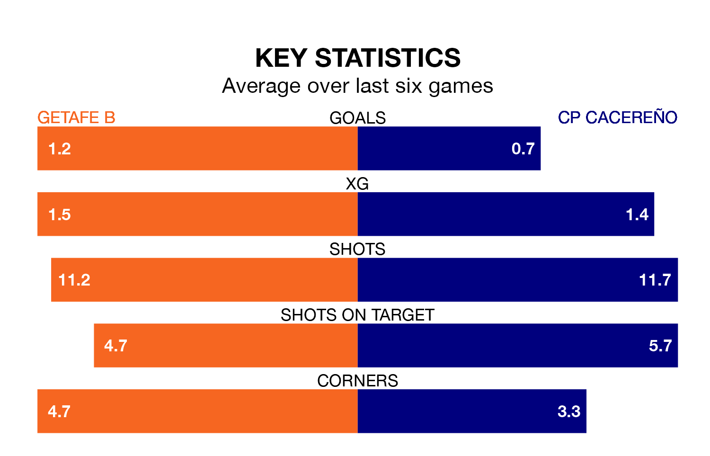

Getafe B host CP Cacereño on Sunday in Segunda División RFEF Group 5.
In their last league match, on January 21, Getafe B lost to Talavera CF 3-0 away.
CP Cacereño also lost, 1-0 at home against CF Villanovense.
With 19 goals in 19 games so far this season, Getafe B are scoring at below the league average rate with 1.0 goals per game. And they are conceding at an average rate, letting in 20 goals at a rate of 1.1 per game.
CP Cacereño, meanwhile, are average scorers, with 1.1 goals per game. They have conceded 1.3 goals per game.
The away team are 13th in the table after 19 games, of which they have won six and drawn six, earning 24 points.
The hosts are six places ahead of CP Cacereño in seventh, with eight wins and five draws putting them on 29 points.
Getafe B are in reasonable form in Segunda División RFEF Group 5, with four wins and two losses from their last six games.
With two wins and two draws over that period, CP Cacereño's form is worse – they have taken eight points from 18, compared to Getafe B's 12.
Updated: 09:18 (UTC), 23/01/24